Where to start
- Open the Construction & Fitting Guide: it shows you how to print the patterns and how to take measurements.
- Choose a pattern from the collection and download it as A4 tiled sheets (to print at home) or as a Plotter file (one full-size sheet).
- Print at 100 % (“Actual size”) and measure the test square: it must be 10 × 10 cm (3.94 × 3.94 in).
- Cut your first test toile before using your final fabric.
Construction guides
Guidance on sewing, pattern-making, fitting and finishing, plus bonuses I, II and III.
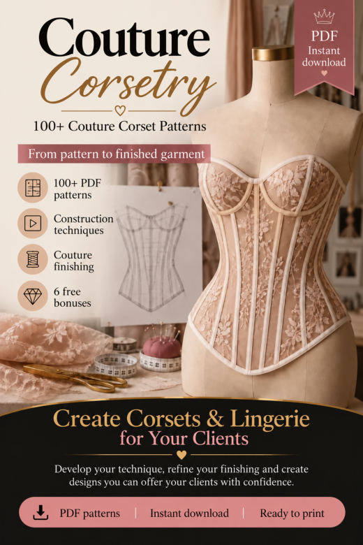
Construction & Fitting GuidePrinting and assembling the patterns, taking measurements, adapting a pattern to other measurements, the toile, precision sewing, finishing and presenting made-to-measure garments.
Open PDF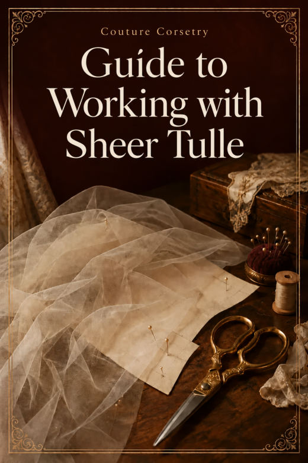
Guide to Working with Sheer TulleStabilize, cut and sew tulle with less stretching and more control.
Open PDF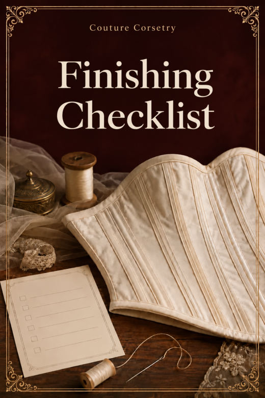
Finishing ChecklistThe details that often get overlooked, to check before you photograph or deliver.
Open PDF- Photography & Styling for Your Portfolio
Light, background, the 8 photos for every piece, styling and building your portfolio with your phone.
Open PDF
No patterns match that name. Try another word.
Couture Corsetry · 110 Corset Patterns
110 PDF patterns · each one as A4 tiled sheets and as a full-size plotter file.
Corset belts 8
 CORSET 001Corset Belt · 4 Panels · Straight Edge
CORSET 001Corset Belt · 4 Panels · Straight Edge CORSET 002Corset Belt · 4 Panels · Pointed Edge
CORSET 002Corset Belt · 4 Panels · Pointed Edge CORSET 003Corset Belt · 4 Panels · Curved Edge
CORSET 003Corset Belt · 4 Panels · Curved Edge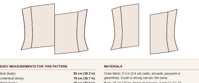
CORSET 004Corset Belt · 4 Panels · Asymmetric Edge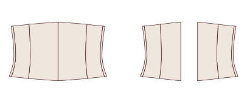
CORSET 005Corset Belt · 5 Panels · Straight Edge CORSET 006Corset Belt · 5 Panels · Pointed Edge
CORSET 006Corset Belt · 5 Panels · Pointed Edge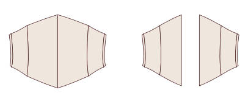
CORSET 007Corset Belt · 5 Panels · Curved Edge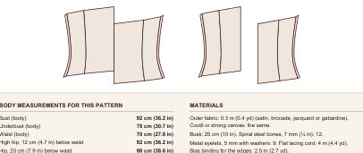
CORSET 008Corset Belt · 5 Panels · Asymmetric Edge
Waist cinchers 12
 CORSET 009Waist Cincher · 5 Panels · Straight Edge
CORSET 009Waist Cincher · 5 Panels · Straight Edge CORSET 010Waist Cincher · 5 Panels · Pointed Edge
CORSET 010Waist Cincher · 5 Panels · Pointed Edge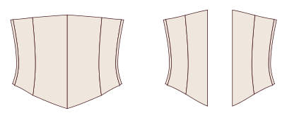
CORSET 011Waist Cincher · 5 Panels · Curved Edge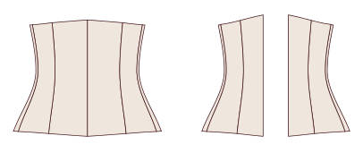
CORSET 012Waist Cincher · 5 Panels · Long Hip CORSET 013Waist Cincher · 6 Panels · Straight Edge
CORSET 013Waist Cincher · 6 Panels · Straight Edge CORSET 014Waist Cincher · 6 Panels · Pointed Edge
CORSET 014Waist Cincher · 6 Panels · Pointed Edge CORSET 015Waist Cincher · 6 Panels · Curved Edge
CORSET 015Waist Cincher · 6 Panels · Curved Edge CORSET 016Waist Cincher · 6 Panels · Long Hip
CORSET 016Waist Cincher · 6 Panels · Long Hip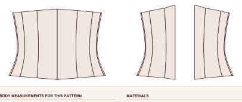
CORSET 017Waist Cincher · 7 Panels · Straight Edge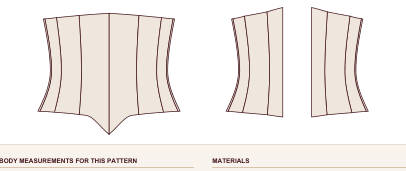
CORSET 018Waist Cincher · 7 Panels · Pointed Edge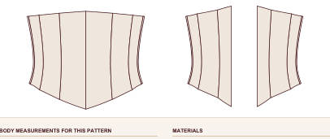
CORSET 019Waist Cincher · 7 Panels · Curved Edge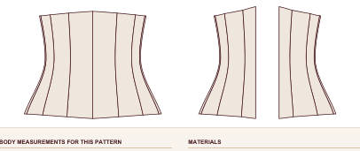
CORSET 020Waist Cincher · 7 Panels · Long Hip
Classic underbust 16
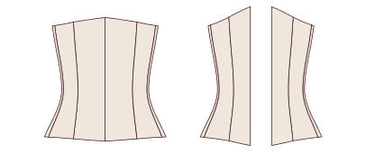
CORSET 021Classic Underbust · 5 Panels · Straight Edge CORSET 022Classic Underbust · 5 Panels · Pointed Edge
CORSET 022Classic Underbust · 5 Panels · Pointed Edge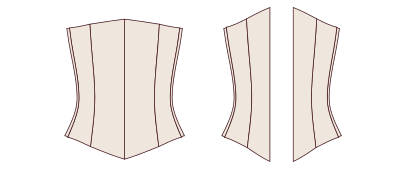
CORSET 023Classic Underbust · 5 Panels · Curved Hip Edge CORSET 024Classic Underbust · 5 Panels · Double-Point Edge
CORSET 024Classic Underbust · 5 Panels · Double-Point Edge CORSET 025Classic Underbust · 6 Panels · Straight Edge
CORSET 025Classic Underbust · 6 Panels · Straight Edge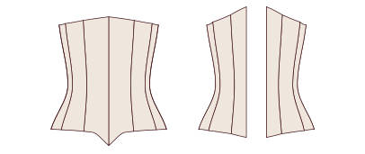
CORSET 026Classic Underbust · 6 Panels · Pointed Edge CORSET 027Classic Underbust · 6 Panels · Curved Hip Edge
CORSET 027Classic Underbust · 6 Panels · Curved Hip Edge CORSET 028Classic Underbust · 6 Panels · Double-Point Edge
CORSET 028Classic Underbust · 6 Panels · Double-Point Edge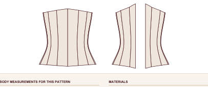
CORSET 029Classic Underbust · 7 Panels · Straight Edge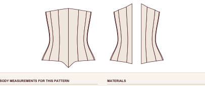
CORSET 030Classic Underbust · 7 Panels · Pointed Edge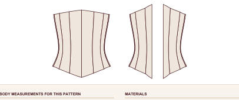
CORSET 031Classic Underbust · 7 Panels · Curved Hip Edge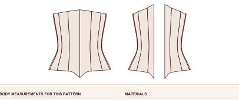
CORSET 032Classic Underbust · 7 Panels · Double-Point Edge- CORSET 033Classic Underbust · 8 Panels · Straight Edge
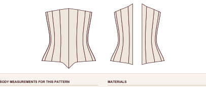
CORSET 034Classic Underbust · 8 Panels · Pointed Edge- CORSET 035Classic Underbust · 8 Panels · Curved Hip Edge
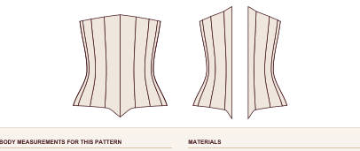
CORSET 036Classic Underbust · 8 Panels · Double-Point Edge
Victorian underbust 10
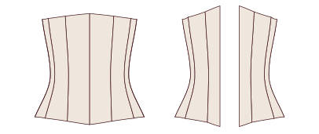
CORSET 037Victorian Underbust · 6 Panels · 6 cm (2.4 in) Waist Reduction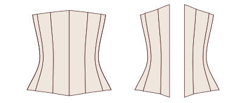
CORSET 038Victorian Underbust · 6 Panels · 8 cm (3.1 in) Waist Reduction- CORSET 039Victorian Underbust · 7 Panels · 6 cm (2.4 in) Waist Reduction
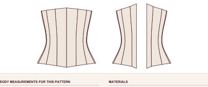
CORSET 040Victorian Underbust · 7 Panels · 8 cm (3.1 in) Waist Reduction- CORSET 041Victorian Underbust · 8 Panels · 6 cm (2.4 in) Waist Reduction
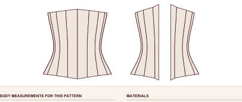
CORSET 042Victorian Underbust · 8 Panels · 8 cm (3.1 in) Waist Reduction- CORSET 043Victorian Underbust · 9 Panels · 6 cm (2.4 in) Waist Reduction
- CORSET 044Victorian Underbust · 9 Panels · 8 cm (3.1 in) Waist Reduction
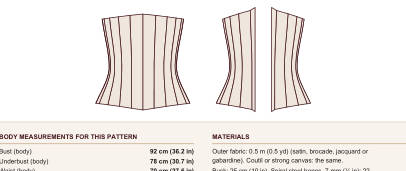
CORSET 045Victorian Underbust · 10 Panels · 6 cm (2.4 in) Waist Reduction- CORSET 046Victorian Underbust · 10 Panels · 8 cm (3.1 in) Waist Reduction
Edwardian underbust 8
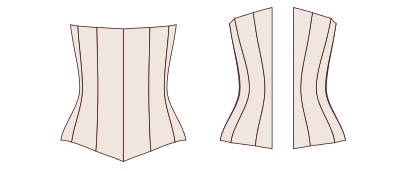
CORSET 047Edwardian Straight-Front Underbust · 6 Panels · Straight Edge CORSET 048Edwardian Straight-Front Underbust · 6 Panels · Pointed Edge
CORSET 048Edwardian Straight-Front Underbust · 6 Panels · Pointed Edge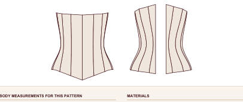
CORSET 049Edwardian Straight-Front Underbust · 7 Panels · Straight Edge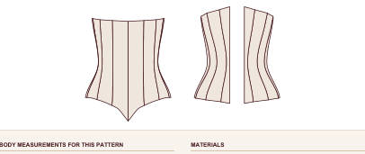
CORSET 050Edwardian Straight-Front Underbust · 7 Panels · Pointed Edge- CORSET 051Edwardian Straight-Front Underbust · 8 Panels · Straight Edge
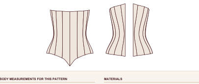
CORSET 052Edwardian Straight-Front Underbust · 8 Panels · Pointed Edge- CORSET 053Edwardian Straight-Front Underbust · 9 Panels · Straight Edge
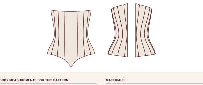
CORSET 054Edwardian Straight-Front Underbust · 9 Panels · Pointed Edge
Longline underbust 8
 CORSET 055Longline Hip-Length Underbust · 6 Panels · Busk
CORSET 055Longline Hip-Length Underbust · 6 Panels · Busk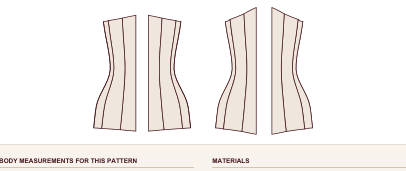
CORSET 056Longline Hip-Length Underbust · 6 Panels · Front Lacing- CORSET 057Longline Hip-Length Underbust · 7 Panels · Busk
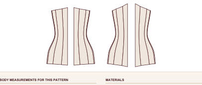
CORSET 058Longline Hip-Length Underbust · 7 Panels · Front Lacing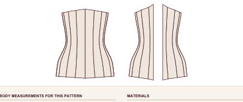
CORSET 059Longline Hip-Length Underbust · 8 Panels · Busk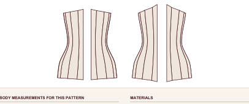
CORSET 060Longline Hip-Length Underbust · 8 Panels · Front Lacing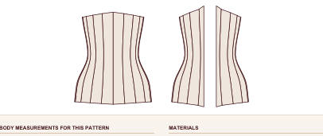
CORSET 061Longline Hip-Length Underbust · 9 Panels · Busk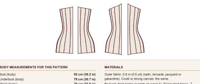
CORSET 062Longline Hip-Length Underbust · 9 Panels · Front Lacing
Overbust · straight neckline 10
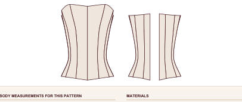
CORSET 063Straight-Neckline Overbust · 6 Panels · Busk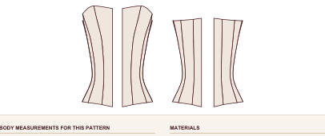
CORSET 064Straight-Neckline Overbust · 6 Panels · Front Lacing- CORSET 065Straight-Neckline Overbust · 7 Panels · Busk
- CORSET 066Straight-Neckline Overbust · 7 Panels · Front Lacing
 CORSET 067Straight-Neckline Overbust · 8 Panels · Busk
CORSET 067Straight-Neckline Overbust · 8 Panels · Busk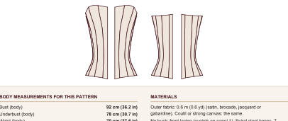
CORSET 068Straight-Neckline Overbust · 8 Panels · Front Lacing- CORSET 069Straight-Neckline Overbust · 9 Panels · Busk
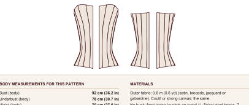
CORSET 070Straight-Neckline Overbust · 9 Panels · Front Lacing- CORSET 071Straight-Neckline Overbust · 10 Panels · Busk
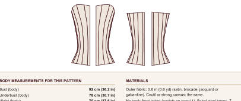
CORSET 072Straight-Neckline Overbust · 10 Panels · Front Lacing
Overbust · sweetheart neckline 10
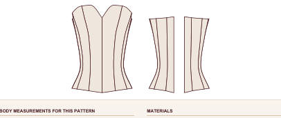
CORSET 073Sweetheart Overbust · 6 Panels · Straight Edge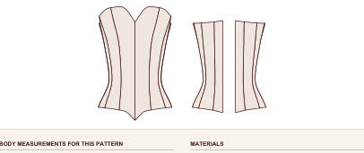
CORSET 074Sweetheart Overbust · 6 Panels · Pointed Edge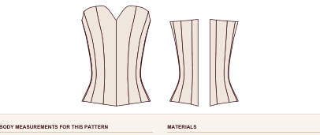
CORSET 075Sweetheart Overbust · 7 Panels · Straight Edge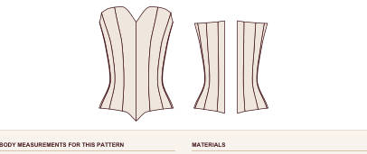
CORSET 076Sweetheart Overbust · 7 Panels · Pointed Edge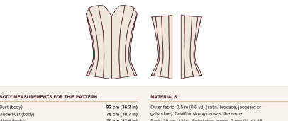
CORSET 077Sweetheart Overbust · 8 Panels · Straight Edge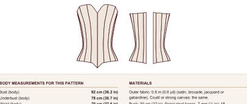
CORSET 078Sweetheart Overbust · 8 Panels · Pointed Edge- CORSET 079Sweetheart Overbust · 9 Panels · Straight Edge
- CORSET 080Sweetheart Overbust · 9 Panels · Pointed Edge
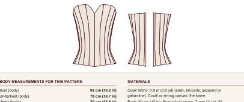
CORSET 081Sweetheart Overbust · 10 Panels · Straight Edge- CORSET 082Sweetheart Overbust · 10 Panels · Pointed Edge
Overbust · V neckline 8
- CORSET 083Soft V-Neck Overbust · 6 Panels
- CORSET 084Deep V-Neck Overbust · 6 Panels
- CORSET 085Soft V-Neck Overbust · 7 Panels
- CORSET 086Deep V-Neck Overbust · 7 Panels
- CORSET 087Soft V-Neck Overbust · 8 Panels
- CORSET 088Deep V-Neck Overbust · 8 Panels
- CORSET 089Soft V-Neck Overbust · 9 Panels
- CORSET 090Deep V-Neck Overbust · 9 Panels
Overbust · balconette 8
- CORSET 091Balconette Overbust · 6 Panels · Straight Edge
- CORSET 092Balconette Overbust · 6 Panels · Pointed Edge
- CORSET 093Balconette Overbust · 7 Panels · Straight Edge
- CORSET 094Balconette Overbust · 7 Panels · Pointed Edge
- CORSET 095Balconette Overbust · 8 Panels · Straight Edge
- CORSET 096Balconette Overbust · 8 Panels · Pointed Edge
- CORSET 097Balconette Overbust · 9 Panels · Straight Edge
- CORSET 098Balconette Overbust · 9 Panels · Pointed Edge
Corselets with straps 6
 CORSET 099Corselet with Thin Straps · 6 Panels
CORSET 099Corselet with Thin Straps · 6 Panels- CORSET 100Corselet with Wide Straps · 6 Panels
 CORSET 101Corselet with Thin Straps · 7 Panels
CORSET 101Corselet with Thin Straps · 7 Panels- CORSET 102Corselet with Wide Straps · 7 Panels
 CORSET 103Corselet with Thin Straps · 8 Panels
CORSET 103Corselet with Thin Straps · 8 Panels- CORSET 104Corselet with Wide Straps · 8 Panels
Front and back lacing 6
- CORSET 105Underbust with Front and Back Lacing · 6 Panels
- CORSET 106Overbust with Front and Back Lacing · 6 Panels
- CORSET 107Underbust with Front and Back Lacing · 7 Panels
- CORSET 108Overbust with Front and Back Lacing · 7 Panels
- CORSET 109Underbust with Front and Back Lacing · 8 Panels
- CORSET 110Overbust with Front and Back Lacing · 8 Panels
Bonus IV · Pack of 20 Bra & Bralette Patterns
20 PDF patterns · each one as A4 tiled sheets and as a full-size plotter file.
Triangle 6
- BRA 001Classic Triangle Bralette
 BRA 002Triangle Bralette with Wide Band
BRA 002Triangle Bralette with Wide Band BRA 003Cross-Back Triangle Bralette
BRA 003Cross-Back Triangle Bralette BRA 004Triangle Bralette with Double Straps
BRA 004Triangle Bralette with Double Straps BRA 005Scalloped Lace Triangle Bralette
BRA 005Scalloped Lace Triangle Bralette- BRA 006Sliding Triangle Bralette with Ties
Halter 2
- BRA 007Halter-Neck Tie Bralette
 BRA 008Halter Bralette with Band
BRA 008Halter Bralette with Band
Plunge and wrap 2
 BRA 009Deep Plunge Bralette
BRA 009Deep Plunge Bralette- BRA 010Wrap-Front Bralette
Longline 2
 BRA 011Straight Longline Bralette
BRA 011Straight Longline Bralette- BRA 012V-Front Longline Bralette


Seamed cups 4
- BRA 015Wire-Free Balconette Bra (3-Piece Cup)
 BRA 016Wire-Free Bra with Vertical-Seam Cup
BRA 016Wire-Free Bra with Vertical-Seam Cup- BRA 017Wire-Free Bra with One-Piece Cup
- BRA 018Lace Bra with 2-Piece Cup


Bonus V · Pack of 20 Bodysuit Patterns
20 PDF patterns · each one as A4 tiled sheets and as a full-size plotter file.
Bodysuits 20
- BODYSUIT 001Bodysuit · Round Neck · Closed Back
- BODYSUIT 002Bodysuit · Round Neck · Low Back
 BODYSUIT 003Bodysuit · Round Neck · Cross Back
BODYSUIT 003Bodysuit · Round Neck · Cross Back BODYSUIT 004Bodysuit · Round Neck · Keyhole Back
BODYSUIT 004Bodysuit · Round Neck · Keyhole Back BODYSUIT 005Bodysuit · V-Neck · Closed Back
BODYSUIT 005Bodysuit · V-Neck · Closed Back- BODYSUIT 006Bodysuit · V-Neck · Low Back
 BODYSUIT 007Bodysuit · V-Neck · Cross Back
BODYSUIT 007Bodysuit · V-Neck · Cross Back BODYSUIT 008Bodysuit · V-Neck · Keyhole Back
BODYSUIT 008Bodysuit · V-Neck · Keyhole Back BODYSUIT 009Bodysuit · Square Neck · Closed Back
BODYSUIT 009Bodysuit · Square Neck · Closed Back BODYSUIT 010Bodysuit · Square Neck · Low Back
BODYSUIT 010Bodysuit · Square Neck · Low Back BODYSUIT 011Bodysuit · Square Neck · Cross Back
BODYSUIT 011Bodysuit · Square Neck · Cross Back BODYSUIT 012Bodysuit · Square Neck · Keyhole Back
BODYSUIT 012Bodysuit · Square Neck · Keyhole Back BODYSUIT 013Bodysuit · Sweetheart Neck · Closed Back
BODYSUIT 013Bodysuit · Sweetheart Neck · Closed Back BODYSUIT 014Bodysuit · Sweetheart Neck · Low Back
BODYSUIT 014Bodysuit · Sweetheart Neck · Low Back BODYSUIT 015Bodysuit · Sweetheart Neck · Cross Back
BODYSUIT 015Bodysuit · Sweetheart Neck · Cross Back BODYSUIT 016Bodysuit · Sweetheart Neck · Keyhole Back
BODYSUIT 016Bodysuit · Sweetheart Neck · Keyhole Back- BODYSUIT 017Bodysuit · Halter Neck · Closed Back
 BODYSUIT 018Bodysuit · Halter Neck · Low Back
BODYSUIT 018Bodysuit · Halter Neck · Low Back- BODYSUIT 019Bodysuit · Halter Neck · Cross Back
 BODYSUIT 020Bodysuit · Halter Neck · Keyhole Back
BODYSUIT 020Bodysuit · Halter Neck · Keyhole Back
Bonus VI · Pack of 20 Brief Patterns: Thongs, Tangas, Cheeky Briefs & Boyshorts
20 PDF patterns · each one as A4 tiled sheets and as a full-size plotter file.
Thongs 5
- BRIEF 001Classic Thong
 BRIEF 002High-Rise Thong
BRIEF 002High-Rise Thong BRIEF 003Thong with Side Straps
BRIEF 003Thong with Side Straps BRIEF 004Lace Thong with Double-Layer Front
BRIEF 004Lace Thong with Double-Layer Front BRIEF 005V-Front Brazilian Thong
BRIEF 005V-Front Brazilian Thong
Tangas 5
 BRIEF 006Classic Low-Rise Tanga
BRIEF 006Classic Low-Rise Tanga- BRIEF 007Mid-Rise Tanga
 BRIEF 008Wide-Side Tanga
BRIEF 008Wide-Side Tanga BRIEF 009High-Cut Tanga
BRIEF 009High-Cut Tanga BRIEF 010Double-Strap Tanga
BRIEF 010Double-Strap Tanga
Cheeky briefs 5
- BRIEF 011Classic Cheeky Brief
- BRIEF 012High-Rise Cheeky Brief
 BRIEF 013High-Cut Cheeky Brief
BRIEF 013High-Cut Cheeky Brief BRIEF 014Cheeky Brief with Lace Sides
BRIEF 014Cheeky Brief with Lace Sides- BRIEF 015Retro High-Waisted Cheeky Brief

Next step
Bookmark this page: it is your lifetime access to the collection. Choose your first pattern, print it and start with the toile.